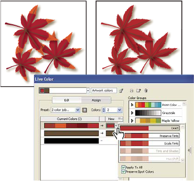

Reduce colors in your artwork
Reducing colors for output, converting colors to grayscale, or limiting colors to a color library is often necessary when you create artwork intended for multiple types of output media. You can easily reduce the number of colors in your artwork using the Live Color dialog box. You can choose whether to use a preset for reducing colors, for example, you can choose Grayscale Art to quickly convert your selected artwork to grayscale.

 Quickly reduce colors using a preset
Quickly reduce colors using a preset
Reducing your colors by using a preset is a quick and easy way to limit your artwork to a specific number of colors or a swatch library.
- Do one of the following:
-
If you want to limit colors to a swatch library, click the library button
 , select the
library you want, and then click OK.
, select the
library you want, and then click OK. -
If you don’t want to limit colors to a swatch library, click OK.
The Live Color dialog box opens. The New column displays the number of colors you chose as your preset, plus black. The new colors are taken from your original artwork.
-